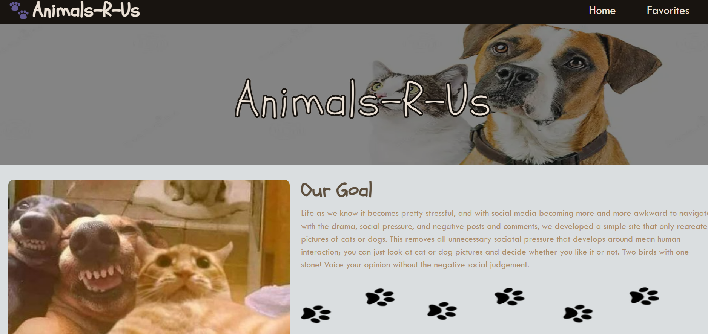
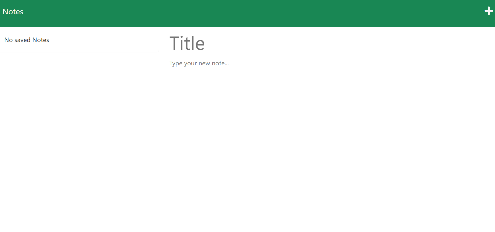

Hi my name is Alison, I graduated from The University of Texas at Austin Coding Boot Camp Program in November 2023, where I learned how to build web applications using MySQL, Node.js, and other technologies. Since January 2023, I have been working as a shift supervisor at CVS Health, managing associates, time, and cash flow through POS systems.
In my current role, I have developed a strong understanding of how to lead and motivate a diverse team of employees, ensure customer satisfaction, and comply with company policies and procedures. I have also applied my coding skills to troubleshoot and improve the functionality and efficiency of the POS systems, creating a smoother and faster checkout process for both customers and associates. I am passionate about learning new skills and technologies, and I am eager to join an organization that values innovation, collaboration, and customer-centricity. I believe I can bring a unique perspective and experience to the team, as someone who has both technical and retail expertise, and who can adapt to different challenges and environments.
Work
1. Animals-R-US
This site provides users with a safe space where they can vote for either dog or cat images and express their opinions about those images by clicking the "LOVE IT" button or the "DON'T LOVE IT" button, without the distractions of other social media contents.

2. Notes Website
The website provides users with the ability to take notes and save them to the site, or they may delete them at any time.

3. The Motivation Blog
This website has been designed with the aim of providing a dedicated space for individuals seeking motivation and inspiration. Its purpose is to serve as a go-to platform where people can find the encouragement they need to stay motivated. Additionally, users are given the opportunity to share their own uplifting words, allowing others to benefit from their positive messages. (not finished)